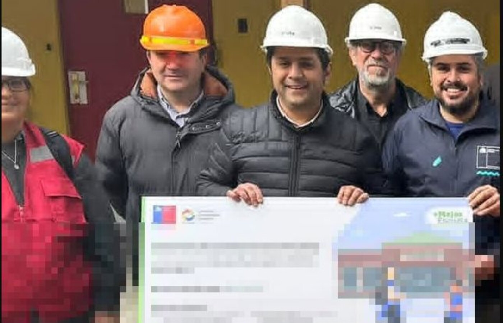
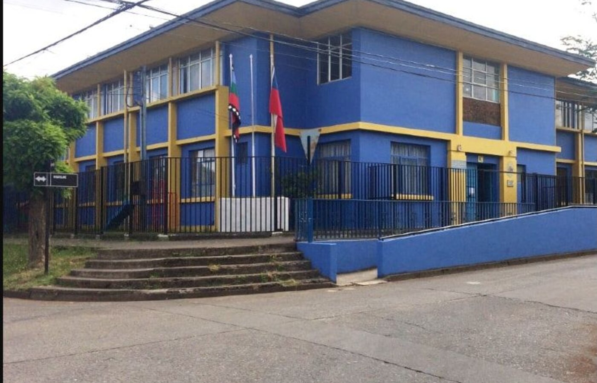
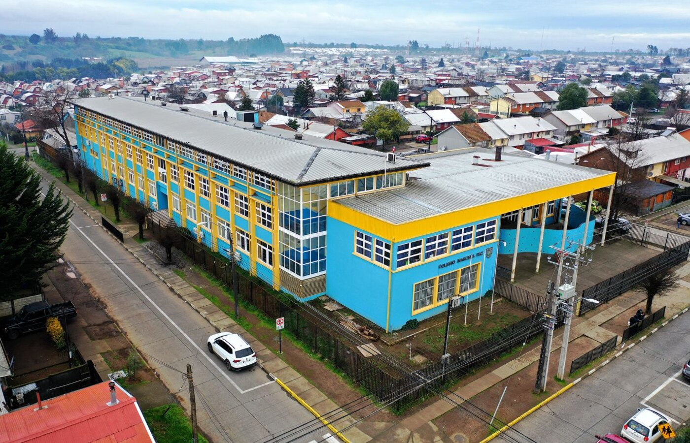
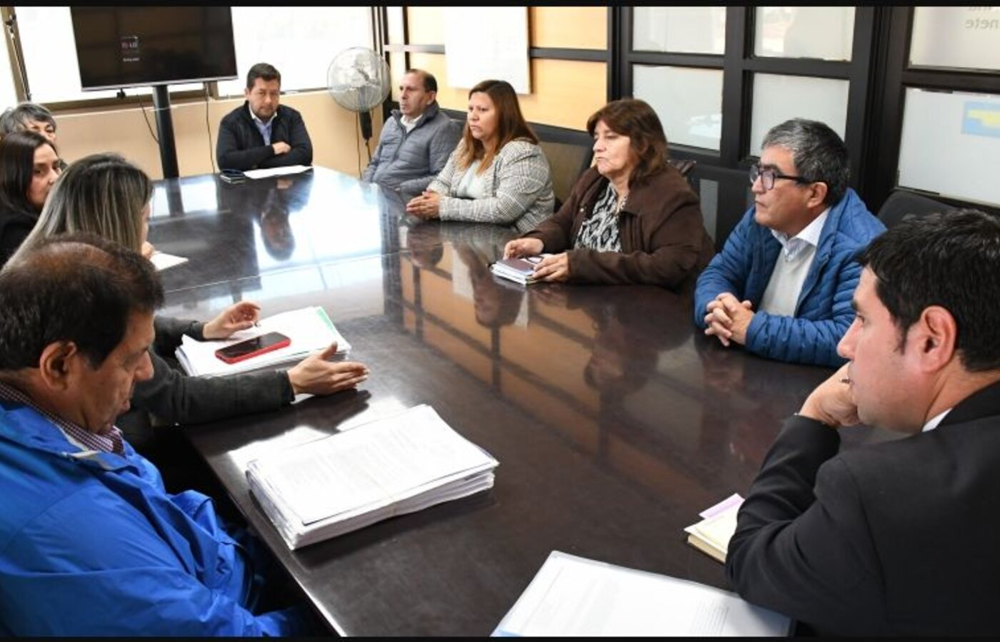

Regularización
Diagnóstico de viabilidad, levantamiento y preparación del expediente según la vía aplicable.
$200.000 a $1.200.000Arquitecto en Angol · José Luis Belmar Jara
Regularizaciones, ampliaciones, subdivisiones, arquitectura y eficiencia energética con orientación profesional y trámites ordenados.
Sin costo dentro de Angol. Para visitas fuera de la comuna, el valor se informa antes y varía según el destino.
PROPUESTA RESIDENCIAL .VISUALIZACIÓN ARQUITECTÓNICA
Consulta rápida
Con pocos datos podremos indicarle el servicio adecuado. No necesita entregar su dirección particular.
Servicios más consultados
Valores y tiempos referenciales. La propuesta definitiva depende de los antecedentes y la complejidad.
Diagnóstico de viabilidad, levantamiento y preparación del expediente según la vía aplicable.
$200.000 a $1.200.000Revisión de lo existente, propuesta de intervención y antecedentes para permiso cuando corresponda.
$300.000 a $1.500.000Estudio normativo y expediente predial para dividir, fusionar o ejecutar ambas operaciones ante la DOM.
$250.000 a $900.000Acreditación de las exigencias de acondicionamiento térmico aplicables al proyecto.
$280.000 a $850.000Catálogo completo
Abra un área para revisar sus servicios, tiempos, precios y antecedentes iniciales.
Diseño y expediente técnico para obra nueva, desde la factibilidad hasta el ingreso municipal.
Revisión de lo existente, propuesta de intervención y antecedentes para permiso cuando corresponda.
Diagnóstico de viabilidad, levantamiento y preparación del expediente según la vía aplicable.
Estudio normativo y expediente predial para dividir, fusionar o ejecutar ambas operaciones ante la DOM.
Preparación y coordinación de antecedentes prediales rurales, incluida certificación SAG cuando corresponda.
Factibilidad y proyecto para dividir suelo cuando se requieren urbanizaciones, cesiones o pronunciamientos sectoriales.
Expediente para solicitar el Informe de Factibilidad para Construcciones ajenas a la agricultura en área rural.
Precalificación o calificación oficial del desempeño energético de una vivienda.
Acreditación de las exigencias de acondicionamiento térmico aplicables al proyecto.
Control independiente de calidad, avance y concordancia con planos y especificaciones.
Opinión de valor fundada en características físicas, legales, urbanas y referencias de mercado.
Revisión profesional antes de comprar, construir, reparar o tomar una decisión técnica.
Diseño, memoria y coordinación del sistema de acumulación y extracción de residuos del edificio.
Cotización detallada
Perfil profesional
Arquitecto de la Universidad del Bío-Bío con trayectoria desde 2009 en vivienda, infraestructura pública, gestión urbana, eficiencia energética, inspección técnica y tramitación municipal.

Diseño energético y expediente técnico
Ver obra inaugurada ↗
Diseño térmico y expediente técnico
Mercado Público 3709-44-LQ20 ↗
Diseño térmico y expediente técnico
Mercado Público 3709-66-LR21 ↗Diseño térmico y expediente técnico
Mercado Público 2745-3-LR22 ↗
Diseño térmico y expediente técnico
Ver antecedente municipal ↗Diseño térmico y expediente técnico
Mercado Público 3909-30-LR22 ↗Colegio Diego Dublé UrrutiaAngol · Diseño aprobado · 2020
Escuela Luis Martínez GonzálezTucapel · Diseño aprobado por AgenciaSE · 2020
Escuela de PaniahueSanta Cruz · Diseño aprobado · Grupo 9 · 2021
Colegio Libertador O’HigginsChépica · Diseño aprobado · Grupo 9 · 2021
Concepción, Chillán, Talcahuano y Graneros.
Angol y programas MINVU.
AgenciaSE, Purén y Traiguén.
Hualpén y Hospital de Traiguén.
Preguntas frecuentes
Principalmente en Angol, la Provincia de Malleco y la Región de La Araucanía. Otros encargos pueden evaluarse según el servicio y su ubicación.
Complete el formulario o escriba por WhatsApp. Primero se revisan la necesidad y los antecedentes para definir correctamente el alcance.
En general: ubicación, fotografías, planos disponibles, superficies, antecedentes municipales y una explicación de lo que necesita.
Sí, cuando el servicio lo requiere. La disponibilidad, el alcance y el costo se definen previamente.
Depende de la complejidad, la calidad de los antecedentes y el alcance. El plazo se informa en la propuesta económica.
Sí. Se pueden revisar antecedentes existentes, detectar brechas y proponer ajustes dentro del alcance contratado.
Sí, previa revisión. La viabilidad depende de la situación real de la propiedad y de la normativa aplicable.
Como regla general, una subdivisión rural certificada por el SAG debe generar lotes de al menos 0,5 hectáreas físicas y conservar el destino rural. Las excepciones y proyectos con urbanización requieren una evaluación específica.
El trámite IFC evalúa construcciones ajenas a la agricultura en suelo rural; no cambia automáticamente la calidad agrícola del resto del predio ni crea nuevos lotes.
Es un análisis del diseño, la envolvente, la orientación, el clima y los sistemas de una vivienda para conocer y eventualmente mejorar su comportamiento energético.
No. Ningún profesional puede garantizar anticipadamente la aprobación de una institución pública; depende de la revisión del organismo competente.
En Angol, la evaluación inicial es sin costo. Si el encargo requiere salir de Angol, el valor de la visita se informa previamente y varía según la comuna.
Contacto
Atención profesional directa desde Angol.